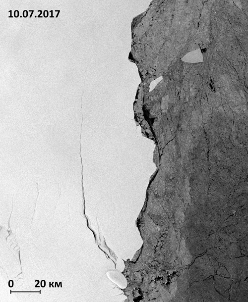

В разделе на примере различных районов приводятся примеры решения тематических задач с использованием
радиолокационных данных, полученных разными съёмочными системами.
| 
|
 |
В период с 10 по 12 июля 2017 года от шельфового ледника Ларсена в Антарктиде откололся
айсберг площадью около 6 тыс. км2. Снимки, регулярно получаемые космическими аппаратами
Sentinel-1 независимо от облачности и солнечного освещения, позволяют проследить за движением этого
айсберга. |